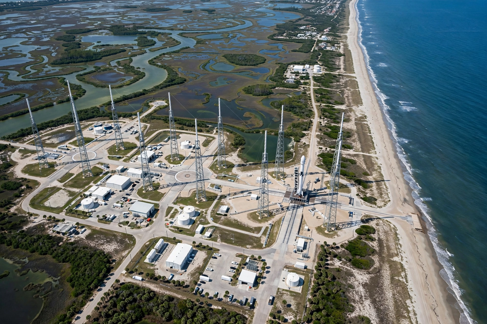

Cape Canaveral Space Force Station
From Wikipedia, the free encyclopedia
| Cape Canaveral Space Force Station | |
|---|---|
| Location | Brevard County, Florida |
| Operator | United States Space Force |
| Established | 1949 (as Joint Long Range Proving Ground) |
| Known for | First US satellite and first American in space launches |

Launch complexes along the Cape.Cape Canaveral Space Force Station (CCSFS) is an installation of the United States Space Force's Space Launch Delta 45, located on Cape Canaveral in Florida, adjacent to NASA's Kennedy Space Center. It is the principal American launch site for missions to eastern orbits and for military space launches, and has hosted launches since 1950.
America's early space milestones flew from the Cape: Explorer 1, the first US satellite (1958); Alan Shepard's and John Glenn's Mercury flights; and the early Apollo test flights from LC-34. The station was renamed from Cape Kennedy Air Force Station and, in December 2020, became the first installation renamed for the new Space Force.
Launch complexes
Dozens of launch complexes line "Missile Row" along the cape. Active pads serve United Launch Alliance and SpaceX rockets from SLC-40 and the former Titan and Atlas sites, while historic pads (LC-5, LC-14, LC-34) preserve Mercury and early Apollo heritage. The cape's geography — ocean to the east for safe downrange flight, near the equator for performance — made it America's spaceport decades before Kennedy Space Center was built on Merritt Island next door for the Saturn programme.
See also
Kennedy Space Center · Baikonur Cosmodrome · Vandenberg Space Force Base · Apollo 1